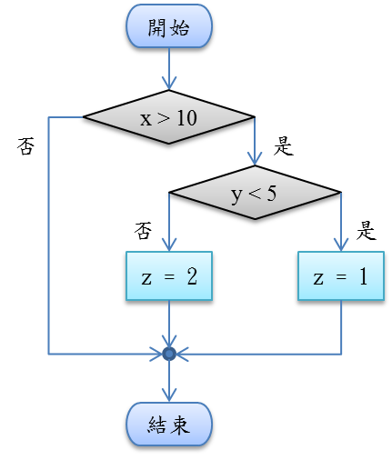
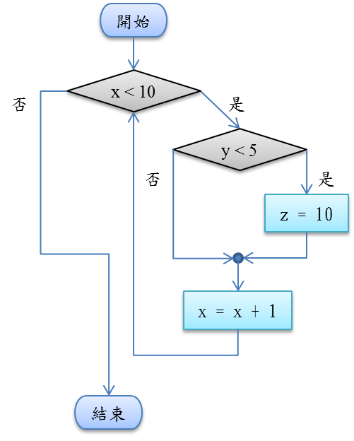

(2019.06) 最新第二版出版
(2023.01) 最新第三版出版
第一版訂正
Ch.2 數字系統
(Page 65)圖2.19 指數部分為10000010
Ch.4 計算機組織與數位邏輯設計
(Page 122)表 4.7 Sum與Carry的真值表,Carry欄位最後一格為1
Ch.5 作業系統
(Page 136)圖5.6 時間片段設為2毫秒的執行甘特圖
Ch.6 網際網路
(P. 200)
Ch.7 程式語言與軟體工程
(P. 230)

(P. 232)

Ch.8 資料結構
(Page 248)隨堂練習第二題,樹的最小高度為log^n